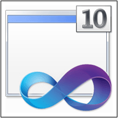
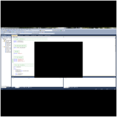
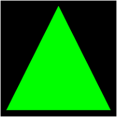
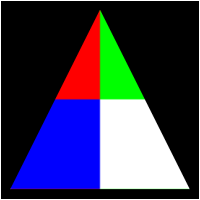
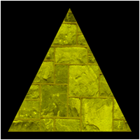
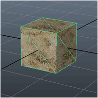

OpenGL 4.0 on Windows Tutorials

 |
Tutorial 1: Setting up OpenGL 4.0 with Visual Studio 2010 |
 |
Tutorial 2: Creating a Framework and Window |
 |
Tutorial 3: Initializing OpenGL 4.0 |
 |
Tutorial 4: Buffers, Shaders, and GLSL |
 |
Tutorial 5: Texturing |
 |
Tutorial 6: Diffuse Lighting |
Tutorial 7: 3D Model Rendering |
 |
Tutorial 8: Loading Maya 2011 Models |
Tutorial 9: Ambient Lighting |